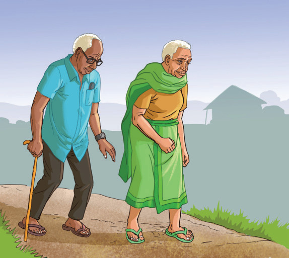
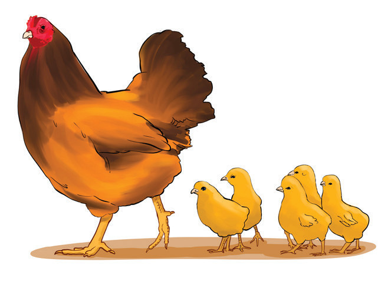
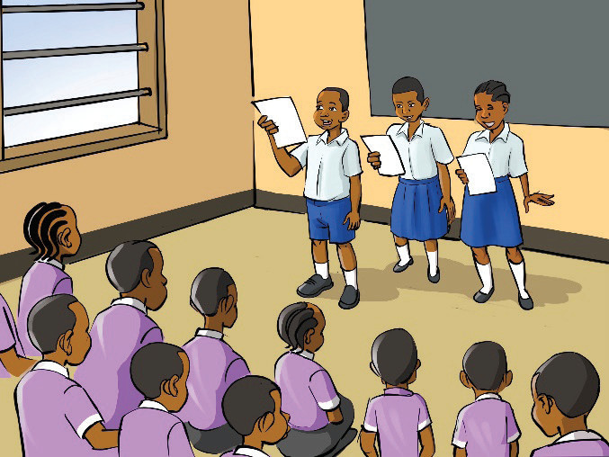
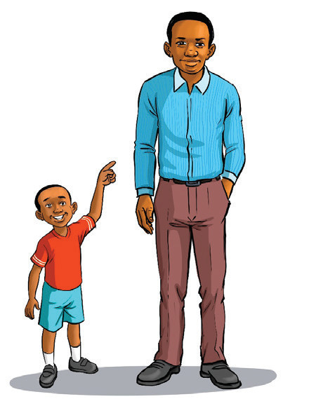
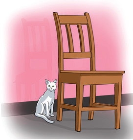

Activity 3.3:
Expressing location using ‘inside, in front of, beside, and behind’
(a) Study the pictures and act out.
The old woman is walking behind the girl. So, the girl is in front of the old woman. The girl is carrying a basket on her head.

The old man is walking behind the old woman.

The hen is walking in front of the chicks. The chicks are walking behind the hen.

The pupils are inside the classroom.

The boy is standing beside the man.

The cat is seated beside the chair.